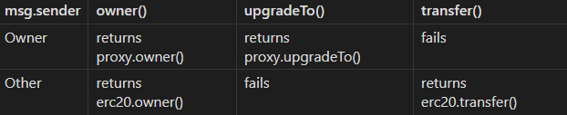

The Goal of the Proxy Pattern
Smart contracts are immutable, therefore it is not possible to change the logic of a smart contract once it has been deployed. However, the ability to update code is often vital, whether to add new features or to patch critical bugs and defects. This is what the proxy pattern offers to developers, a means of updating code by introducing upgradeability to smart contracts.
Upgradeability is achieved by separating storage and logic. A proxy
contract contains the state and delegates execution to a logic
contract. There is an opcode specifically for this called
delegatecall. delegatecall executes the
code of a target address with the context of the caller. Meaning
that the state of the caller is used with the logic of the target.
To upgrade the logic, the proxy can be updated to reference a different logic contract with updated logic.
The Problems with Proxies
Conceptually the proxy setup is quite simple to grasp, however, it introduces a host of problems if not careful. A key issue that arises as a result of this pattern is clashes. This occurs for both the variables and function signatures of the proxy and logic contracts.
Variable clashes
Updating the incorrect state variable
This example is taken from a
RareSkills article
on delegatecall, please check it and RareSkills out.
Given the following contracts Proxy and
Logic, unintended behaviour arises as a result of
variable clashes.
contract Logic {
uint public number;
function increment() public {
number++;
}
}
contract Proxy {
address public calledAddress = 0xd9145CCE52D386f254917e481eB44e9943F39138;
uint public myNumber;
function callIncrement() public {
calledAddress.delegatecall(
abi.encodeWithSignature("increment()")
);
}
}
The Proxy::callIncrement function will call the
Logic::increment function (shocking I know) with the
context of the Proxy contract. The way the
increment function should be interpreted is: to
increment the value of storage slot zero of the contract. As stated
in the article "the name of the variable doesn't matter; what is fundamental is
which slot it is in."
Remember this logic was executed in the context of the Proxy
contract. If storage slot zero is to be incremented by one, the
calledAddress variable will then be updated to
0xd9145CCE52D386f254917e481eB44e9943F39139. This breaks
the Proxy contract as it is no longer able to delegate to the Logic
contract. It is imperative to ensure there are no collisions
between the slots of the Proxy and Logic contract as it can lead to
unexpected behaviour breaking the smart contract.
Reading from the incorrect state variable
Again referencing an example from
RareSkills, the following set of contracts have a crucial flaw due to
variable clashes between Proxy and
Logic contracts.
contract Logic {
uint public discountRate = 20;
function calculateDiscountPrice(uint256 amount) public pure returns (uint) {
return amount - (amount * discountRate)/100;
}
}
contract Proxy {
uint public price = 200;
address public called;
function setCalled(address _called) public {
called = _called;
}
function setDiscount() public {
(bool success, bytes memory data) = called.delegatecall(
abi.encodeWithSignature(
"calculateDiscountPrice(uint256)",
price
)
);
if (success) {
uint newPrice = abi.decode(data, (uint256));
price = newPrice;
}
}
}
The Logic::calculateDiscountPrice function reads the
state variable discountRate to calculate the new
discounted price. However, this function is executed within the
context of the Proxy contract. What the
Logic::calculateDiscountPrice function is really doing
is multiplying the parameter amount by the value in
storage slot 0, dividing it by 100 and subtracting this from the
original amount value. The
discountRate is supposed to be 20, however, when
executing within the context of the Proxy it is 200,
as that is the value in storage slot 0. This leads to the state
variable price being updated to the wrong value.
Function signature clashes
In the EVM each function is identified by the first 4-bytes of its Keccak-256 hash. An issue can arise in the Proxy pattern where different functions in the logic and proxy contracts both share the same signature.
The example below is taken from an
OpenZeppelin blogpost. It can be observed that the hash of
collate_propagate_storage(bytes16) is the same as
burn(uint256).
pragma solidity ^0.5.0;
contract Proxy {
address public proxyOwner;
address public implementation;
constructor(address implementation) public {
proxyOwner = msg.sender;
_setImplementation(implementation);
}
modifier onlyProxyOwner() {
require(msg.sender == proxyOwner);
_;
}
function upgrade(address implementation) external onlyProxyOwner {
_setImplementation(implementation);
}
function _setImplementation(address imp) private {
implementation = imp;
}
function () payable external {
address impl = implementation;
assembly {
calldatacopy(0, 0, calldatasize)
let result := delegatecall(gas, impl, 0, calldatasize, 0, 0)
returndatacopy(0, 0, returndatasize)
switch result
case 0 { revert(0, returndatasize) }
default { return(0, returndatasize) }
}
}
// This is the function we're adding now
function collate_propagate_storage(bytes16) external {
implementation.delegatecall(abi.encodeWithSignature(
"transfer(address,uint256)", proxyOwner, 1000
));
}
}
Therefore if a user calls the Proxy to burn some
tokens it will match the signature of
collate_propagate_storage(bytes16) and send 1000
tokens to the owner of the proxy instead.
Note that this cannot occur in a singular contract, as the compiler will identify a clash of signatures and throw an error.
Constructor Caveats
Code in the constructor of a logic contract is effectively useless as the code only runs once during its deployment and any resulting state changes are irrelevant as the context of execution comes from the Proxy contract. As said in the proxies blog on OpenZeppelin: "Proxies are completely oblivious to the storage trie changes that are performed by the constructor."
Therefore, in any logic contract, if there is any initial setup
required, an initializer function should be used.
OpenZeppelin supports this with its host of
upgradeable contracts.
Transparent Proxies
Transparent proxies are a standard way of implementing upgradeability via a proxy contract that avoids the pitfalls previously explored.
Transparent proxies have message-routing logic based on the
msg.sender. If the caller is the
admin of the Proxy contract, the proxy will not
delegate calls. If the caller is not the
admin the proxy will always delegate calls. This
behaviour is demonstrated in the table below:

ERC-1967
Every proxy must store the address of the logic contract, however as previously explored there is a danger of storage variable clashes altering this value. To ensure that a clash never occurs for the address of the logic function, ERC-1967 implemented a reserved slot for storing the address of a logic contract. This ensures that the compiler will never assign a variable to this slot, preventing clashes and unexpected behaviour from occurring. All proxy contracts from OpenZeppelin implement ERC-1967.